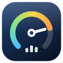
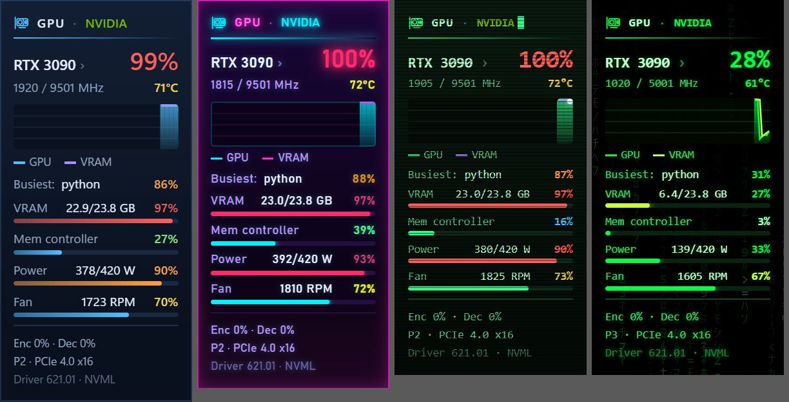
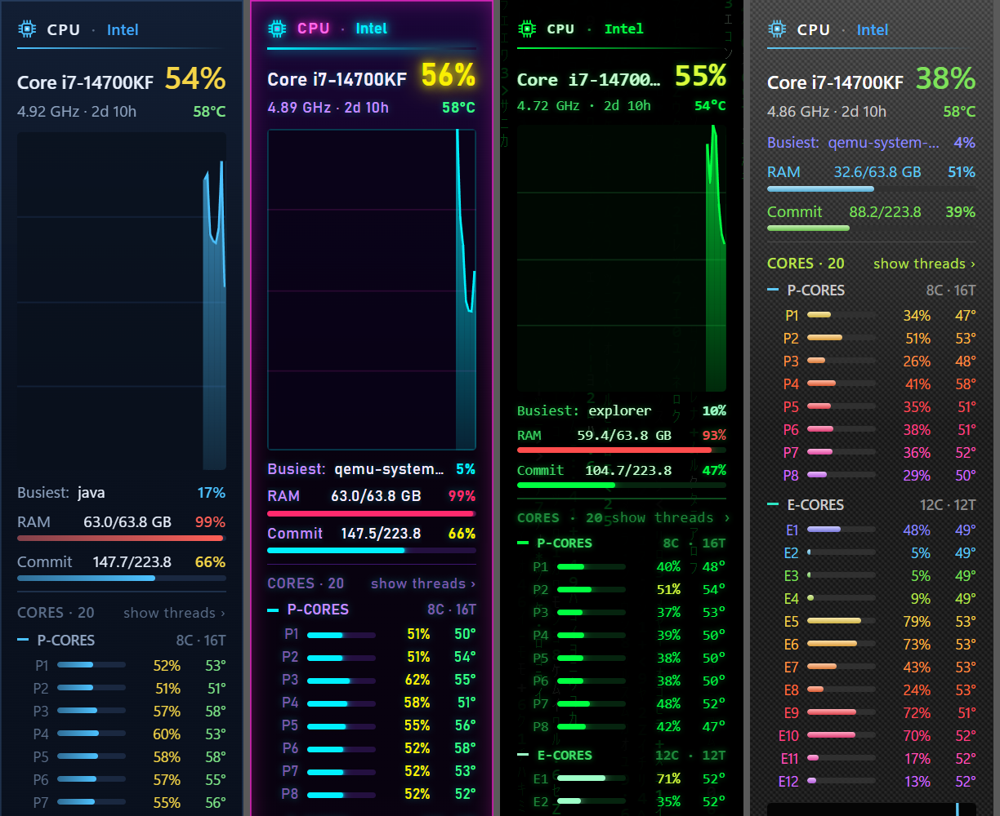
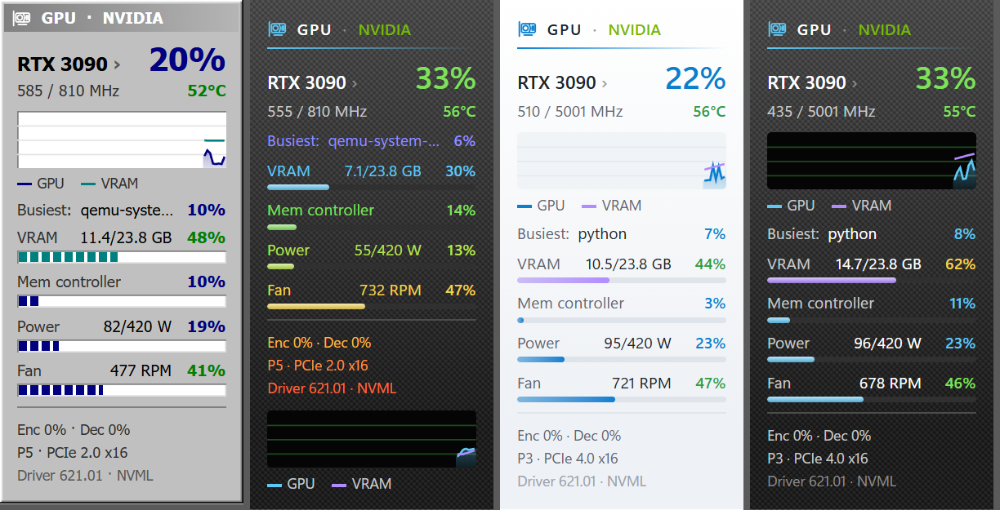

Modern Meters
Beta 0.9CPU, GPU, Network, Drives and Weather gadgets for Windows 10 and 11, each in its own small window on the desktop. No 8GadgetPack needed.
Download the latest versionWindows 10 or 11, 64-bit. Unpack the zip anywhere and run ModernMeters.exe.

The gadgets
- CPU — total load and its graph, clock, uptime, the busiest program, memory, every core (P- and E-cores apart) or every thread, temperatures
- GPU — load, video memory, memory controller, power, fan, clocks, temperature, encoder and decoder, PCIe link; NVIDIA read directly, others through DirectX
- Network — download and upload with a graph, Wi-Fi and signal, addresses (hidden until clicked), firewall, link, ping, traffic totals
- Drives — every disk with its partitions, health, SSD life left, temperature, read and write speed
- Weather — now, the next hours as a chart, rain in the next two hours, three days, sunrise and sunset, UV and air quality
A live zone at the right of the CPU and Network graphs shows the last seconds five times a second, so short spikes show at once. The gadgets line up along the right edge by themselves and stay on the desktop when you press Show desktop.

18 styles, each with a touch of its own
| Liquid, Air | the desktop shows through, blurred; a highlight follows the mouse, light streaks drift |
| Glass, Colored glass | see-through; a glint sweeps over the glass, the accent rim breathes |
| Classic, Light | an activity light flares with each update; big numbers count to their new value |
| Carbon, Rainbow | a lacquer gleam runs along the bars; every row in its own color, flowing |
| Retro terminal | the cursor erases the title and types it again; the graph's beam glows like an oscilloscope's |
| More terminals | aubergine with a shell prompt, black and white switching on like an old tube, blue commander with a selection bar |
| Matrix | code rains behind the meters, the title decodes itself |
| Neon | cyan and magenta glowing, the title flickers like a sign |
| Gray 90s | beveled gray, segmented bars, the title bar lights up while the mouse is on it |
Plus Auto, which follows Windows' light or dark mode, an accent color of your choice, and 13 languages.

Install
- Download
ModernMeters-…-win-x64.zipfrom the latest release. - Unpack it into a folder of your choice and run
ModernMeters.exe. The first start lines the gadgets up and asks whether to start with Windows. - If Windows says "Windows protected your PC", click More info → Run anyway, as for any new program that isn't signed yet.
Everything is in the menu of the tray icon by the clock: gadgets, line them up, style, accent color, language, always on top, animations, start with Windows. Drag a gadget by its title; ⚙ and ✕ appear under the mouse.
Updates
Once a day the app looks for a new version. It shows as a small ↑ on the gadgets' titles, and a click installs it; or let it install updates by itself.
Privacy
No tracking. The app connects to Open-Meteo for the weather, api.ipify.org for your external IP, 1.1.1.1 for the ping and GitHub for the update check. Settings stay on your computer.
Support
Questions, ideas or bugs: open an issue. If you like it, you can buy us a coffee on Ko-fi. Using the Windows Sidebar? The same gadgets exist for 8GadgetPack, free and open source.